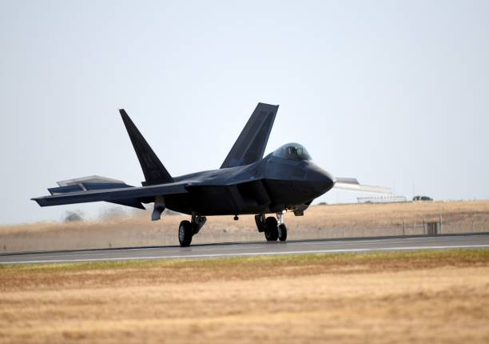

Je me nomme Kamagny Bathaud Kenneth Landry, je suis née le 28 juillet 1995 a la maternité de yopougon.
Je me décrirais comme quelqu'un de passionné dans tous ce que je fais.
En parlant de passion, ma première passion professionnelle était d'être pilote d'avions de chasse, ensuite venais ma passion pour l'informatique. j'ai pas eu la chance d'entrer dans l'armée de l'air ou dans l'aviation civile
mais j'ai eu l'opportunité d'avoir des bases en informatique et d'avoir la possibilité de pratiquer cette passion au quotidien.
Professionnellement j'ai la capacité de travailler en équipe, je suis presque toujours de bonne humeur, et je sais m'adapter a tous types d'environnement.
Arrivé en 2010 après mon BEPC, le Collège Eburnie de Cocody-Angré m'a permis d'avoir de très bonne base au lycée afin d'etre prêt pour la suite de mes études.
Arriver a l'université après 7mois de vacances suite a l'optention de mon bac en 2014, mon intégration a ce nouveau mode de vie et d'etude n'a pas été facile. Après deux années en Sciences naturelles j'ai décidé de quitter l'université pour entrer dans la formation professionnelle et ainsi me former a l'outil informatique.
Entrée au Celia de treichville en réussissant au concours d'entrée a la formation professionnelle, J'y ai passé trois belles années qui m'ont permises d'acquérir les bases nécessaires pour exercer dans ma passion qui est l'informatique. Aussi en fin de cycle en 2021, j'ai obtenu mon BREVET DE TECHNICIEN SUPERIEUR (BTS) cette même année en SYSTEMES ELECTRONIQUES ET INFORMATIQUES (SEI).
Desireux d'entrée en JUIN 2023 a SIMPLON CÔTE D'IVOIRE j'aimerais avoir la chance d'être veritablement formée et discipliné dans le metier de Developpeur WEB et MOBILE pour être professionnellement epanouie.
BAC D LICENCE 2 BTS (SEI)
Une de mes première passion a été l'armée, plus précisement l'armée de l'air. J'ai toujours été fasciné par les avions de chasses et leurs puissances. De façon globale l'armée m'a toujours plus pour sa discipline et le fais quelle garantisse la sécurité de son peuple. Et dans notre siècle l'armée de l'air est l'outil la plus puissante de toutes les armées du monde et constitue le baromêtre de puissance de celles-ci.
 Ma deuxième passion a été l'informatique. Adolescent ma serie préferé etait 24hchrono où j'admirais les deux personnages que sont JACK BAUER et CHLOE O'BRIEN. Chloe pour sa maitrise de LINUX et sa façon de faire pratiquer si facilement la programmation. A partir de la j'ai toujours eu une passion et une fascination pour la programmation. A cela s'est ajouté
au cours de ma formation et de mes expériences professionnelles des compétences en Maintenance Informatique, en Infographie.
Je suis aussi un grand passionné de sport en générale et plus précisement de BASKET, FOOTBALL, FORMULE 1,TENNIS . Comme modèle sportif de chaque sport préféré je peux citer: STEPHEN CURRY, CHRISTIANO RONALDO, MAX VERSTAPPEN, NOVAK DJOKOVIC.
J'ai pour Ambition d'être un excellent Developpeur FullStack, et d'être aussi un Designeur ( qui est a mon sens un pallier au dessus de l'infographe ). Mais ma plus grande Ambition INFORMATIQUE est l'EXPERTISE EN SECURITE INFORMATIQUE.